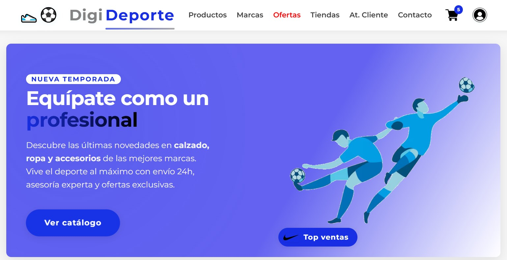
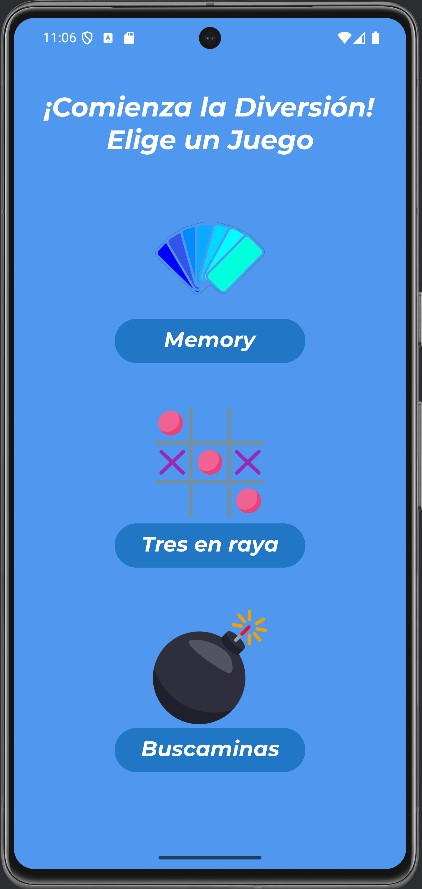

Nicolás Acevedo García
Especialista en Sistemas Microinformáticos | Desarrollador de Aplicaciones Multiplataforma | Experto en Programación
ContáctameSobre Mí
Soy Nicolás, un joven de 18 años apasionado por la tecnología y el desarrollo de aplicaciones. Actualmente estudio Desarrollo de Aplicaciones Multiplataforma y cuento con formación en Sistemas Microinformáticos y Redes. Me considero una persona proactiva, con gran capacidad de aprendizaje y adaptación, y busco contribuir con mis habilidades en proyectos que impulsen mi crecimiento profesional.
Experiencia Laboral
Actualmente, no cuento con experiencia laboral formal en una empresa, pero durante mi formación académica he realizado prácticas en Digitech (Madrid), donde tuve la oportunidad de aplicar mis conocimientos técnicos en un entorno profesional real.
En estas prácticas, participé activamente en el mantenimiento de equipos informáticos, la instalación y configuración de sistemas operativos, la resolución de incidencias técnicas para usuarios internos y gestión de inventario.
Habilidades Técnicas
- Desarrollo de Aplicaciones Multiplataforma
- Sistemas Operativos
- Lenguajes: HTML, CSS, JavaScript, Java, PHP
- Software y Herramientas
- Administración y Mantenimiento de Equipos
- Bases de datos: MySQL, Acceso a Datos con Java.
Proyectos Destacados
Página web: Tienda Online de Productos Deportivos
Desarrollé una página web de productos deportivos como proyecto final del curso. La web cuenta con un catálogo con filtros disponibles organizado por categorías (ropa, calzado, accesorios y equipos), un sistema de carrito de compras funcional y hasta un mapa interactivo para ver tiendas físicas.
Además, implementé un formulario de contacto y enlaces a redes sociales para facilitar la comunicación con los clientes.
Este proyecto me permitió consolidar mis conocimientos en desarrollo frontend (HTML, CSS, JavaScript) y backend (PHP, MySQL), así como aplicar buenas prácticas de diseño y usabilidad para garantizar una experiencia de compra sencilla y segura.
👇🏼 Desde este botón se puede ver la página web.
Aplicación Móvil: MiniJuegos Multiplataforma

Desarrollé una aplicación móvil en Android Studio que integra tres minijuegos clásicos: memory, tres en raya y buscaminas. El usuario puede elegir el juego que prefiera desde un menú principal intuitivo.
-
Memory: Encuentra las parejas, con contador de intentos y mensaje de felicitaciones al ganar el juego.
-
Tres en raya: Típico juego de tres en raya. Juega contra otro jugador, con interfaz sencilla y dinámica.
-
Buscaminas: Descubre las minas ocultas en un tablero, aplicando lógica y estrategia.
Esta aplicación fue creada utilizando Java y XML, aplicando conceptos de programación orientada a objetos, gestión de eventos y diseño de interfaces amigables para el usuario. El proyecto me permitió consolidar mis habilidades en el desarrollo de aplicaciones móviles, la integración de diferentes lógicas de juego y la creación de una experiencia de usuario fluida y divertida.
Probar App en el NavegadorContacto
+34 642 38 34 41 (Llamadas o Whatsapp)
Acevedonicolas808@gmail.com
Desde aquí tiene acceso a mi LinkedIn.
Desde aquí tiene acceso a mi CV.